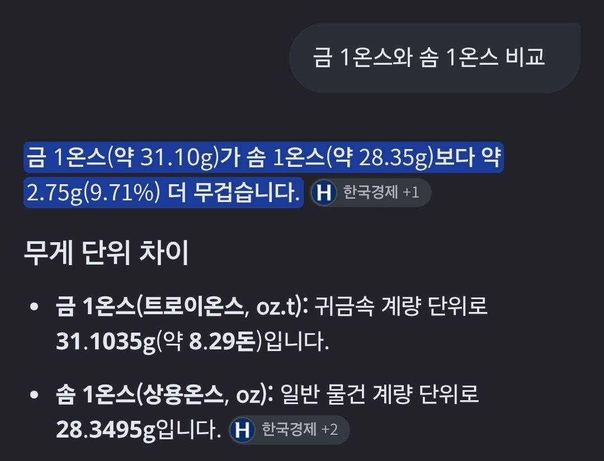

이런시발 금1온스가 더 무겁잖아
영길리 이 미친 새끼들

이런시발 금1온스가 더 무겁잖아
영길리 이 미친 새끼들
쓰는 단위가 같은말이여도 다른 무게더라
한국도 비슷한거있음
고기 한근은 600g입니다. 단 과일 야채 등의 한근은 375g or 400g입니다. 단 인삼과 수삼의 한근은 750g입니다. 아주 개씨발 단위가 따로없다
더 많이 들고가고 싶은 상품일수록 한근이 더 무겁네
미터법의 은혜로 우리가 직관적으로 이해 가능한 질량단위로 비교할 수 있어서 다행이지 임페리얼계만 쓰면 쥰내 어지러울듯
어차피 근은 일상생활에서 잘 쓰나...? 식당에서도 삼겹살 1인분도 몇그램이에요? 하던거같은데
옛날엔 정육점가서 한근주세요 두근주세요 했었음.
고기에는 많이쓰지?
고기에는 아직 쓰는단위임 식당에서는 이젠 의미가없음 삼겹살 1인분에 절대 근단위가 나올수없어서...
젠장 근첩 이놈들
근으로 메뉴 파는곳도 있긴하지
???: 고기 한근 500그람인데~?
한근같은 단위가 지역마다 다르기도함 ㅋㅋㅋ
si단위계 이전의 단위들은 무게라는 개념, 길이라는 개념의 절대량에 대한 단위라기 보단 대체로 1회분이라는 개념으로 끊은 단위라 소비량, 사용량이 서로 다른 물질끼리는 같은 단위를 써도 절대량이 서로 다름
근데 지들도 헷갈리는 걸 아는지 미터법 같이 표기함
그런의미에서 일본 석 단위도 재밌더라
성인 남성이 1년동안 먹을 곡식 무게를 1석으로 정한거라고
한국 석이랑 다름?
왜 일본 석 단위라고 함?
조선시대 밥그릇 보고 오면 성인 남성이 1년 먹을 곡식 무게가 일본이랑 다를수밖에 없다는걸 알텐데
한국 일본 1석 똑같은 단위임 그리고 동시대 일본 밥그릇도 존나 커ㅋㅋ
한국 석은 시대마다 다른데 대충 80~100L정도 되고 일본 석은 180L로 서로 다름
피트도 걍 말 그대로 대충 발 크기라는 뜻으로 피트잖아ㅋㅋㅋㅋ
피트는 뭔가 적응하기 어려운 게, 1풋(foot), 2피트(feet), 3피트,...로 읽음.
근데 같은 질량으로 해도 더 무거울거임. 부피 차이 때문에
솜은 부력때문에 약간 가벼워진다고함
귀금속 상인의 1온스와 면화 상인의 1온스가 서로 다르다는 말에 대한 대답으로 “그게 뭐가 문젠데?”가 나오던 시절 단위를 아직도 쓰고 있으니 생기는 문제
롱톤 숏톤 미터톤 ㅁㅊ놈들아!!! 걍 si 단위 쓰라고!!!
《근》이 더 ㅁㅊ놈이야..
고기 600그람 채소 400그람 <개>고기300그람 등등 지맘대로임ㅋㅋㅋ
스틸 이스 헤비어 댄 페더스
https://www.youtube.com/watch?v=-fC2oke5MFg
이 또한 대영제국의 은혜겠지요...
미친단위네..
더 또라이같은거는 파운드로 세면 솜이 더 무겁다는거임
ㅂㅅ같네ㅋㅋ
이거 진짜네 금은 1파운드가 12온스고 솜은 1파운드가 16온스래
또라이같아서 트로이 온스라고 이름붙였구나…
ㅅㅂㅋㅋㅋ
고추 한 근이랑 고춧가루 한 근이랑 무게다름
fl oz도 있음. 음료수같은거 단위
대충 1 fl oz에 30ml정도 함
전근대 도량형 특)지랄병임
롱톤 숏톤 맛 좀 볼래?
팩트) 금 1파운드보다 솜 1파운드가 더 무겁다
SI: 예?

근 무게 다른 거랑 비슷한거 아님?
도량형도 통일 못 시키는 미개한 영미놈들!
트로이온스
아씨 몬티파이썬 죽음의 다리가 정답일거라 생각했는데 아니네... what do you mean? normal or troy ounce?
거기까진 생각 못 했는데...
아아아아아악
이야 단위계는 원래 그렇지만 진짜 엄마 없네